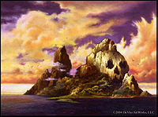

De: La Frikipedia, la enciclopedia extremadamente seria.
De: La Frikipedia, la enciclopedia extremadamente seria. De: La Frikipedia, la enciclopedia extremadamente seria.
| De la serie Países del planeta tierra: | |||||
| Isla Maldad o Evil Island | |||||
|---|---|---|---|---|---|
| |||||
| Lema: Destruiremos(no conquistaremos o dominaremos) el mundo!!! | |||||
| Himno: Macarrones y Pantallazos
| |||||
| 
| |||||
| Capital | Mal city | ||||
| Mayor ciudad | Imperiex | ||||
| Lenguas oficiales | Ingles,Haserfroch | ||||
| Gobierno | Pastocracia Antropofaga | ||||
| El mas fuerte | Dr.Vulcanus Shwaneistaiger | ||||
| Área | Pacifico sur | ||||
| Población | 10000 Supervillanos y sus subditos | ||||
| Moneda | Sangre | ||||
| Zona horaria | -00:00 | ||||
| Dominio Internet | .EV | ||||
| Código telefónico | 321..BOOM!!!
| ||||
| Un resort de villanos | |||||
La isla del mal es un refugio usado por los super villanos que queda en una hermosa isla volcánica en el pacifico sur y es bonita debido a sus comodidades como playas hermosas, fauna exótica,gran cantidad de recursos naturales y energéticos y un volcan en cuyo cráter puedes arrojar a tus peores enemigos,como hacen casi todos en este país.
Este maravilloso resort para personas malvadas esta ubicado en el pacifico sur,para ser mas exacto en el triangulo del dragón donde han sido instalados dispositivos que derriban los aviones y bloquean los satélites para que nadie sepa de este exclusivo lugar,esfuerzos que han fallado porque los delfines comunicaron la ubicación de esta isla a la CIA,la isla limita con el mar al norte,el océano al sur,el agua al este y la isla de los mutantes al oeste
La única cosa rara que tiene la isla es un volcán y unos cuantos montículos de tierra,cosas que son muy aprovechadas por los villanos para construir sus refugios y tener energía eléctrica, también hay una cascada para suicidios de 500 m de altura por lo que creo que un suicidio es mas doloroso allá
La isla fue descubierta por el Dr.Erick Vulcanus en 1980, época en la cual la mayoría de gente malvada y perversa tenia otros lugares para vivir,pero 5 años después los héroes y la Policía llevaron al exilio a los supervillanos que necesitaban un lugar donde vivir,fue entonces que el Dr.Vulcanus decidió vender terrenos de su isla para que los Villanos construyeran sus guaridas ahí y también hizo varias instalaciones como un complejo deportivo y un centro de masajes para que los habitantes descansaran entre el tiempo que cometían sus delitos.Mas tarde se haría una nueva atrraccion en el cráter del volcán,donde los villanos podían arrojar a sus estupidos y horrendos enemigos y cocinar al horno.
Luego en 1996 los supervillanos comenzaron a agruparse por ciudades a las que nombraron con nombres que reflejaran su ideología como Mal City,Imperiex,Evil Town y Disney,cosa que no le agrado mucho al dueño de la isla pero que ya no podía controlar porque los villano irían a acabar con el en el momento que ellos quisieran
La principal fuente de ingresos de la isla es los delitos,principalmente el robo de bancos que quedan en los países de Europa porque sus cuentan tienen mucho dinero,el secuestro de lideres mundiales también aporta gran cantidad de recursos a la isla ya que no solo piden dinero sino también cosas estúpidas como alimentos y uranio para vivir en el mal y la oscuridad.El dinero recibido va a parar al banco local donde se paga el sueldo del personal de la isla y se financian los costos de el mantenimiento.
Se dice también que tienen una gran participación en multinacionales malvadas como Ford,Fox y Disney porque de esa manera no solo ganan mucho dinero,sino que también pueden utilizar sus mercancías para dominar el mundo o destruirlo lo que ellos prefieran por que son super guays y ellos lo deciden todo muahahaha.
El sistema de impuestos de la isla es muy curioso,se hace en 3 pasos:

|
Isla querida de mi alma
Debemos honrarte por hacernos robar bancos Y no encarcelarnos después, por escondernos de superman y de el administrador de wikipedia por permitirnos hurtar los derechos de autor de disney aunque walt disney nos robe después por decir en HOYGAN: TODOZ APEZTAN MENOZ LLO pero no te agradecemos no enseñarnos a rimar |

|
| Himno de la isla del mal |
Te he decir que esta isla no tiene mucho turismo,sobretodo por el hecho de que siempre exigen rescate por los turistas,pero lo que ellos no dicen es que toda la isla dispone de un complejo de comodidades que pueden maravillar a cualquiera y los empleados son muy amables,la tasa de delincuencia es muy baja porque todos acordaron por contrato robar cosas solo en el extranjero y cometer delitos fuera de la isla,y por ultimo pero no menos importante al lado hay una isla de mutantes que se alimentan de delincuentes,por lo que mas vale que no hagas nada malo mientras visitas la isla
Autor(es):